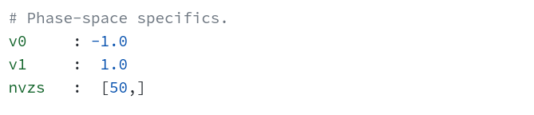

A SOPHISTICATED ENGINE FOR COLLECTIVE NEUTRINO OSCILLATION SIMULATION
COSEν written completely in C++ provide two advanced numerical schemes
to simulate collective neutrino oscillation in the mean-field limit. The first method uses fourth order
accurate central differencing supplimented by third order Kreiss-Oliger error suppression scheme.
The second one is implemented in using finite volume method along with the seventh order accurate
weighted essentially non-oscillatory scheme for the flux reconstruction across the cell boundaries.
In both cases time evolution is carried out via fourth order Runge-kutta method so that the spatial
and temopral accuracies are of the same order.
COSEν solve the following 1-D hyperbolic equation with source term which describe
the evolution of the two flavor neutrino system.
\(\rho_v(z, t)\) is a complex valued \(2\times2\) matrix carrying the information about the number densities (diagonal entries) of the e-type (\(\nu_e\)) and the x-type (\(\nu_x\)) neutrinos, and the correlations (off-diagonal entries) among them for a given velocity mode \(v\) at position \(z\) and time \(t\). The density matric \(\rho_v\) takes the following form.
The quantity \(H_v(z, t)\) on the right hand side of the equation (1) represents the Hamiltonian which dictates
the dynamics of the flavor transitions. In general \(H_v\) contentains contributions from vacuum oscillation
\(H^{\text{vac}}\), interaction with matter \(H^{\text{m}}\) and the interactions among themselves
\(H^{\nu\nu}\). In the present implementation of COSEν, contribution from matter has been
neglected assuming that the matter is homogeniously distributed, which therefore do not affect the neutrino
flavor transitions. Thus, \(H_v\) takes the form,
where, \(\bar\rho\) is the density matrix for the anti-neutrino.
In order to solve the equation (1) numerically, we devide the spatial domain spanning from \(z_0\) to \(z_1\) into \(N_z\) discreate points an such that the size of each cell \(dz = (z_1 - z_0)/N_z\). Furthermore we also devide the velocity domain into \(N_{v_z}\) bins such that the integration in the equation (3) and evolution of each velocity mode can be effectively carried out.
With the above discretization, the initial value problem in the equation (1) can be transformed into the flollowing form.
where, \(L_i^\text{vac}, L_i^{\nu\nu}\) and \(L_i^\text{adv}\) are the operators which computes the contribution from vacuum oscillation, neutrino-neutrino interaction and the spatial derivative respectively at the \(i^\text{th}\) cell, \(0\leq i < N_z\). Thus given the values of the field variables at \(t=0 \) of each velocity mode at all grid points, the successive states of the field varibles can be solved using standard ordinary differential equation solving techniques such as Runge-Kutta method.
A flowchart depicting the different steps involved in the numerical simulation of collective neutrino
oscillation
using COSEν is shown below.
The fourth-order finite difference using in the advection
The Kreiss-Oliger dissipation for error surpressing in finite difference goes like
The pseudocode for the FD part:
NuOsc::calRHS(FieldVar *out, const FieldVar *in){
for all velocity bins{
for all spatial grids{
#ifdef VAC_OSC_ON
out += -i [H_vac, in]
#endif
#ifdef ADV_FD
out += L_adv[in]
#endif
#ifdef COLL_OSC_ON
for all velocity bins{
do the computation within the integral
}
#endif
#ifdef KO_FD
do the Kreiss-Oliger dissipation
#endif
}
}
}
Although most of the part of the implementation of COSEν with FV remains same as that of
FD, the FV treatment considers the field variables as cell averaged quantities. As a result, the spatial
derivative at \(i^\text{th}\) grid point become proportional to the difference oin fluxes across the
boundaries of the same cell. For our 1-D case, these boundaries are located at \((i-1/2)*dz\) and
\((i+1/2)*dz\). Thus we have,
where \(\mathcal{F}\) is the flux function associated with the cell averaged quantity \(\tilde\rho_v\). There are different approximations by which we can estimate the flux function. Here we adopted the seventh order accurate Weighted Essentially Non-Oscillatory (WENO7) scheme with 3 fourth order accurate sub-stencils for the flux reconstruction at the cell boundaries. In this case the flux function can be written as,
\(w_r\) here is the weight factor for the fourth order accurate flux function constructed from the sub-stencil indexed using the shift parameter \(r\).
The pseudo code for the FV implementation is given below.
NuOsc::calRHS(FieldVar *out, const FieldVar *in){
compute flux using WENO7
for all velocity bins{
for all spatial grids{
out = 0
#ifdef ADV_FD
out += net_flux[in] // calculated using WENO7
#endif
#ifdef VAC_OSC_ON
out += -i [H_vac, in]
#endif
#ifdef COLL_OSC_ON
for all velocity bins{
do the computation within the integral
}
#endif
}
}
}
Along with the main simulation engine, COSEν we provide simple interface written in
python to reduce the difficulties of setting up and running the simulation. The enitre
process of the simulation can be thought of as consisting of following steps.
In the following we will explain the details of carrying out each of these steps.
Open COSEnu/lib/configs.yaml file. The domain spacific part typically
look like one in the the screen shot below.
zrange : Start and end values for the domain required for the simulation. Both satrt and
end values are necessary.
nzs : Values of resolutions for which we want to run the simulations. In principle we
can put any number of value inside the square bracket separated by comma. However the bracket should
contain atleast one value.
CFLS : Values of the CFL porameter for which we want to run the simulation.
Any nmber of values with in the square brackets are allowed. The Bracket cannot be empty. For numerical
stability each of these values should be less than or equal to 1.
In the current implementation we only consder the z-componant of velocity which can take values from -1 to 1. To evolve each velocity modes numerically, we treat the beam of neutrinos whose velocity lies between and as asingle beam with velocity . The value of is then determined via the parameter vz. Screensot for the example of settingtThe starting and ending values of the velocity and, the resolution of the phsase-space is given below.

v0 : Starting value of the velocity range.
v1 : Ending value of the velocity range.
nvzs : Number of angular bins we require for the simulation.
We need to store the outputs from the simulations inside some folder. The name of the folder can be specified as follows.
folder_fv : Create folder with specifid name to store the results from simulation with finite
volume
(FV) scheme.
folder_fd : Create folder with specifid name to store the results from simulation with finite
difference (FD) scheme.
Once we set up the domain-specific and phasespace-specific parameters, we can go ahead and run the code. Although the initialization of the grid points with appropriate values are necessary. We will discuss this part little bit later. Let us first run the code with our setup assumig some one has already specified the initialization on our behalf. Then running the command
python manage.py --in fv
from the COSEnu folder will create sub folders with inside the folder_fv with
names same
as
ID = Nz_Nvz_CFL. That is for
the set of parameter nzs : [1000], nvzs : [50] and
CFLS : [0.2, 0.4], the
script
manage.py will create subfolders with names 1000_50_0.2 and
1000_50_0.4
inside
folder_fv. The tree view of the folder_fv will look something like in the
figure below.
Similarely, to initialize the simulation with finite difference, we can run the following command from the terminal.
python manage.py --in fd
Now specifying the command
python manage.py --ls fv
will run the jobs sequentially with FV scheme and
python manage.py --ls fd
will run the jobs sequentially with FD scheme. Now that we have run the code successfully, let us move on to the part where we fill up the computational cells with neutrinos.
Kindly direct the queries here.